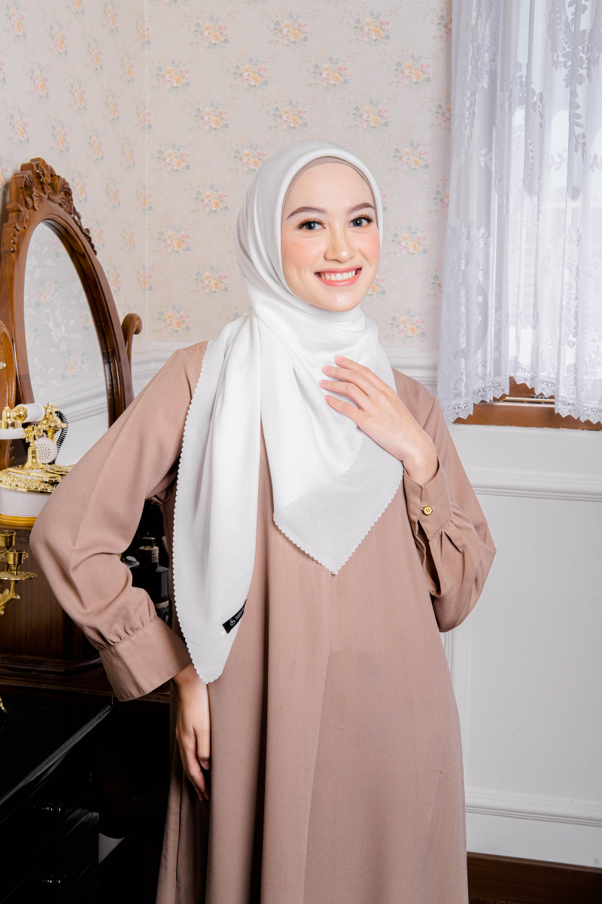

Kerudung segiempat adalah salah satu jenis fashion yang semakin populer di kalangan wanita, terutama di negara-negara dengan mayoritas penduduk Muslim. Dengan bentuk yang berbentuk segiempat, kerudung ini sangat mudah dipakai dan memberikan berbagai pilihan gaya yang beragam. Terbuat dari berbagai material seperti polycotton, rayon, chiffon, atau katun, kerudung segiempat menawarkan kenyamanan serta tampilan yang elegan. Keunggulan dari kerudung ini adalah dari segi fleksibilitasnya; dapat digunakan dalam berbagai kesempatan, mulai dari acara formal hingga santai. Desain yang bervariasi, baik dari segi warna, motif, maupun ukuran, memungkinkan setiap wanita untuk mengekspresikan diri sesuai dengan kepribadian dan gaya masing-masing. Dengan pemakaian yang tepat, kerudung segiempat tidak hanya berfungsi sebagai penutup kepala, tetapi juga sebagai pernyataan mode yang menawan. Maka kami menawarkan produk Kerudung segiempat dengan
Kerudung segiempat adalah salah satu jenis fashion yang semakin populer di kalangan wanita, terutama di negara-negara dengan mayoritas penduduk Muslim. Dengan bentuk yang berbentuk segiempat, kerudung ini sangat mudah dipakai dan memberikan berbagai pilihan gaya yang beragam. Terbuat dari berbagai material seperti polycotton, rayon, chiffon, atau katun, kerudung segiempat menawarkan kenyamanan serta tampilan yang elegan. Keunggulan dari kerudung ini adalah dari segi fleksibilitasnya; dapat digunakan dalam berbagai kesempatan, mulai dari acara formal hingga santai. Desain yang bervariasi, baik dari segi warna, motif, maupun ukuran, memungkinkan setiap wanita untuk mengekspresikan diri sesuai dengan kepribadian dan gaya masing-masing. Dengan pemakaian yang tepat, kerudung segiempat tidak hanya berfungsi sebagai penutup kepala, tetapi juga sebagai pernyataan mode yang menawan. Maka kami menawarkan produk Kerudung segiempat dengan Kualitas Premium.
Kami mempekerjakan tenaga ahli dalam bidang yang sudah berpengalaman dan profesional sehingga menghasilkan produk yang terbaik. Demi meningkatkan kesejahteraan rakyat, kami bekerja keras dalam memperluas lapangan pekerjaan dengan mendirikan lebih banyak lagi UKM di berbagai daerah Indonesia.
Spesifikasi Produk:
| Bahan : Premium Pollycotton |
| Ukuran : 110x110 cm |
| Keterangan jahit : Neci |
| warna : Hitam, Cream, Merah, Biru, Navy, Hijau, Mocca, Grey dan masih banyak lagi. |
 Pashmina adalah jenis kain yang terbuat dari serat alami, yang dikenal dengan kelembutannya, kehangatannya, dan kualitasnya yang tinggi. Pashmina juga sering dijadikan sebagai aksesori fashion, outfit pelengkap, atau bahkan sebagai selimut ringan. Dengan tekstur yang lembut dan nyaman, pashmina sangat cocok digunakan sepanjang tahun, baik di musim dingin maupun musim panas. Maka kami menawarkan kepada Anda Pashmina dengan
Pashmina adalah jenis kain yang terbuat dari serat alami, yang dikenal dengan kelembutannya, kehangatannya, dan kualitasnya yang tinggi. Pashmina juga sering dijadikan sebagai aksesori fashion, outfit pelengkap, atau bahkan sebagai selimut ringan. Dengan tekstur yang lembut dan nyaman, pashmina sangat cocok digunakan sepanjang tahun, baik di musim dingin maupun musim panas. Maka kami menawarkan kepada Anda Pashmina dengan Kualitas Premium.
yang dapat menemani hari-hari Anda dengan lebih percaya diri karena menggunakan pashmina yang elegan.
Spesifikasi Produk:
| Bahan : Babydoll |
| Ukuran : 75x180 cm |
| Keterangan: Finishing Stik |
| warna : Hitam, Cream, Merah, Biru, Navy, Hijau, Mocca, Grey dan masih banyak lagi. |
 Variasi Hijab Basic dari Hijans dengan jahitan yang rapi dan berbahan polysofter premium yang ringan dan adem, sehingga cocok bagi kamu yang bergerak aktif. Hijab polos memang tak lekang oleh waktu, dapat dipakai di berbagai kesempatan dengan bermacam gaya sesuai kepribadianmu. Dengan ukuran 110x110 Cm dan finishing sonic, hijab ini menawarkan kenyamanan maksimal. Bahan polysofter yang digunakan nyaman dipakai, mudah dibentuk, tidak menerawang, tidak kaku, dan memiliki efek sparkling yang elegan. Hijab ini cocok digunakan sehari-hari maupun untuk acara formal. That's why it's a must-have! Maka kami menawarkan produk Kerudung segiempat dengan Kualitas Premium.
Kami mempekerjakan tenaga ahli dalam bidang yang sudah berpengalaman dan profesional sehingga menghasilkan produk yang terbaik.
Spesifikasi Produk:
| Bahan : Polysofter |
|
| Ukuran : 110x110 cm |
| Keterangan : Finishing Sonic |
| Keunggulan : Nyaman dipakai, mudah dibentuk, tidak menerawang, bahan tidak kaku, sparkling, cocok untuk digunakan harian atau acara formal |
| warna : Hitam, Cream, Merah, Biru, Navy, Hijau, Mocca, Grey dan masih banyak lagi. |